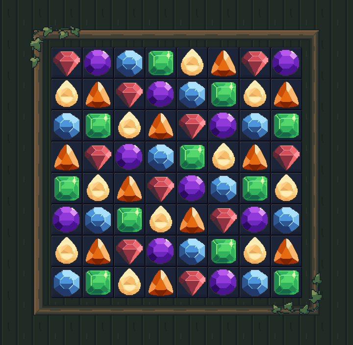
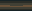
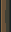
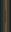
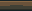
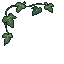

Checkpoint 4 only. Actual Unity art-only board preview. Same 512x512 board, original 64x64 gems/cells. Approved background, portrait and lower HUD remain unchanged. Full-screen assembly is the next checkpoint.

Four native corners, four repeating rails, two separate foliage sweeps. No additional board props. PixelLab: one foliage source, 5 generations. LibreSprite: ten native documents. Approved portrait/background





Compilation and Unity preview checks passed. Exact 2x rendering, five shell sizes, eight matching corner ports and zero cell intrusion. Notes | Verification report. No merge.